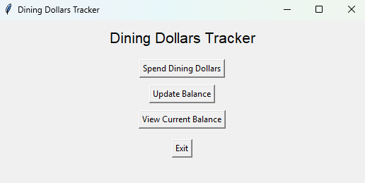
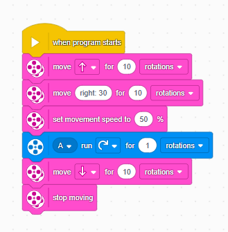
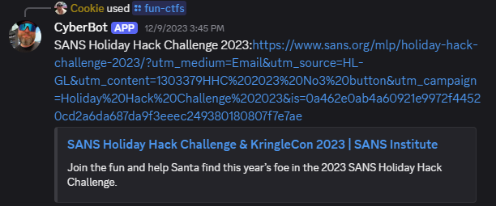

Here are some of the projects that I have made, as well as a brief summary of each of them. Most of the projects should be visible on my GitHub page, which can be found in the "About Me" section.
This is a Python program I developed to track my dining dollars more efficiently while at college. It helps me keep track of my expenses and avoid running out of funds during the semester.
This was a project that I did in one of my college classes, where we had to design a robot to complete a set of tasks. For that project, my role was the program developer, as I made up the code (albeit it was just block code like in Scratch) that helped the robot complete the tasks. Here is a sample output (not the one I used for the assignment): 
This is a Discord bot that I made that would take in commands to find CTFs and say other things, and produce an output (which can be seen below).
